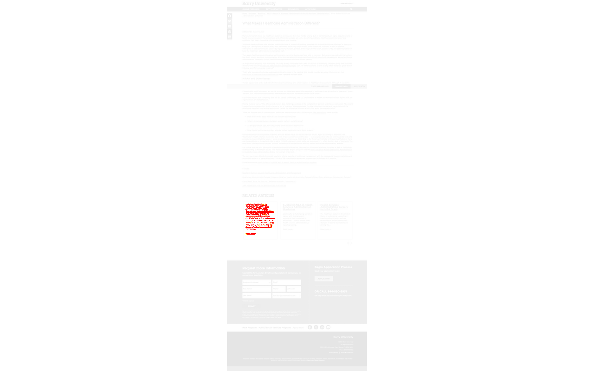
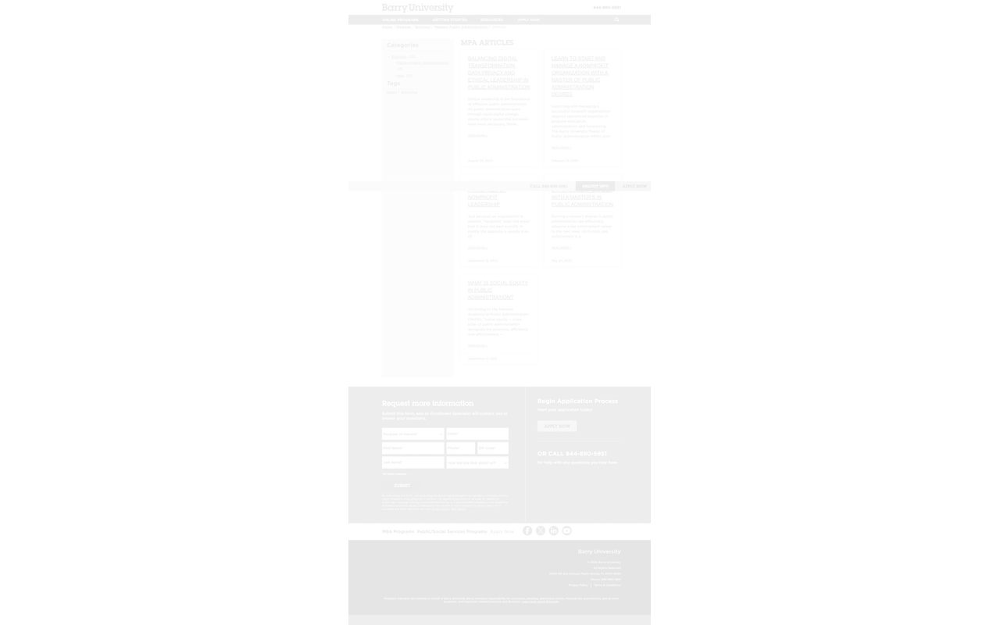

Total Pages Tested: 115
Passed: 115
Failed: 0
Errors: 0
| Page | Similarity | Status | Thumbnail |
|---|---|---|---|
| / | 100.00% | Pass | |
| /degrees/business/mba/ | 99.84% | Pass | |
| /accreditation-and-accolades/ | 100.00% | Pass | |
| /apply/ | 100.00% | Pass | |
| /apply/?d=PS-ALL | 100.00% | Pass | |
| /military-veteran-services/ | 100.00% | Pass | |
| /admissions/ | 100.00% | Pass | |
| /tuition/ | 100.00% | Pass | |
| /degrees/business/mba/marketing/ | 100.00% | Pass | |
| /student-services/ | 100.00% | Pass | |
| /degrees/business/masters-public-administration/ | 99.69% | Pass | |
| /degrees/business/mba/general/ | 100.00% | Pass | |
| /academic-calendar/ | 100.00% | Pass | |
| /degrees/business/masters-public-administration/general-concentration/ | 100.00% | Pass | |
| /degrees/business/mba/health-services-administration/ | 100.00% | Pass | |
| /about/ | 100.00% | Pass | |
| /articles/ | 100.00% | Pass | |
| /wp-content/uploads/sites/40/2020/04/back-to-top-arrow.png | 100.00% | Pass | |
| /faculty/ | 100.00% | Pass | |
| /degrees/business/ | 100.00% | Pass | |
| /degrees/business/masters-public-administration/nonprofit-admin/ | 100.00% | Pass | |
| /financial-aid/ | 100.00% | Pass | |
| /colleges-and-schools/ | 100.00% | Pass | |
| /degrees/business/mba/finance/ | 100.00% | Pass | |
| /degrees/business/mba/management/ | 100.00% | Pass | |
| /degrees/ | 100.00% | Pass | |
| /degrees/business/mba/international-business/ | 100.00% | Pass | |
| /wp-content/uploads/elementor/css/post-817.css?ver=1733897615 | 100.00% | Pass | |
| /degrees/business/mba/finance/risk-management-strategies/ | 100.00% | Pass | |
| /degrees/business/mba/marketing/boost-career-with-masters-mktg/ | 99.73% | Pass | |
| /degrees/business/mba/marketing/ai-revolutionizing-strategy/ | 99.71% | Pass | |
| /degrees/business/mba/health-services-administration/what-is-hsa-mba/ | 99.66% | Pass | |
| /degrees/business/mba/management/how-to-become-a-better-boss/ | 99.75% | Pass | |
| /degrees/business/mba/management/transferable-skills-and-careers/ | 99.75% | Pass | |
| /wp-content/uploads/elementor/css/post-813.css?ver=1733897613 | 100.00% | Pass | |
| /apply/?d=BARRY-M-MBAGEN | 100.00% | Pass | |
| /degrees/business/mba/management/total-quality-management/ | 99.73% | Pass | |
| /apply/?d=BARRY-M-MPA | 100.00% | Pass | |
| /degrees/business/masters-public-administration/nonprofit-admin/start-and-manage-a-nonprofit/ | 100.00% | Pass | |
| /degrees/business/mba/management/prioritize-professional-development/ | 99.80% | Pass | |
| /degrees/business/mba/3-new-options/ | 99.68% | Pass | |
| /degrees/business/mba/management/become-a-leader-with-this-program/ | 99.86% | Pass | |
| /degrees/business/mba/international-business/graduate-from-anywhere/ | 100.00% | Pass | |
| /apply/?d=BARRY-M-MBAINTBUSCONC | 100.00% | Pass | |
| /degrees/business/mba/articles/ | 100.00% | Pass | |
| /faculty/yun-wang/ | 100.00% | Pass | |
| /degrees/business/mba/health-services-administration/health-services-administration-careers/ | 99.75% | Pass | |
| /degrees/business/masters-public-administration/general-concentration/perry-ceasar-seizes-mpa/ | 100.00% | Pass | |
| /wp-content/uploads/elementor/css/post-209.css?ver=1733897347 | 100.00% | Pass | |
| /degrees/business/mba/health-services-administration/what-administrators-know-about-hipaa/ | 99.75% | Pass | |
| /apply/?d=BARRY-M-MBAFIN | 100.00% | Pass | |
| /faculty/michael-tyler/ | 100.00% | Pass | |
| /degrees/business/masters-public-administration/general-concentration/boost-your-law-enforcement-career/ | 99.78% | Pass | |
| /wp-content/uploads/elementor/css/post-827.css?ver=1733897620 | 100.00% | Pass | |
| /degrees/business/mba/marketing/why-earn-mktg-masters/ | 99.70% | Pass | |
| /faculty/bruce-payne/ | 100.00% | Pass | |
| /degrees/business/mba/5-benefits/ | 99.66% | Pass | |
| /wp-content/uploads/elementor/css/post-835.css?ver=1733897624 | 100.00% | Pass | |
| /faculty/james-talerico/ | 100.00% | Pass | |
| /tag/testimonial/ | 100.00% | Pass | |
| /degrees/business/articles/ | 100.00% | Pass | |
| /apply/?d=BARRY-M-MBAMGMT | 100.00% | Pass | |
| /wp-content/uploads/elementor/css/post-815.css?ver=1733897614 | 100.00% | Pass | |
| /wp-content/uploads/elementor/css/post-825.css?ver=1733897619 | 100.00% | Pass | |
| /degrees/business/masters-public-administration/general-concentration/social-equity/ | 99.54% | Pass | |
| /degrees/business/mba/general/social-responsibility-leader-mba/ | 100.00% | Pass | |
| /degrees/business/mba/marketing/creative-marketing-strategies/ | 99.74% | Pass | |
| /degrees/business/mba/health-services-administration/5-jobs-in-this-field/ | 99.73% | Pass | |
| /degrees/business/mba/health-services-administration/what-makes-healthcare-admin-different/ | 99.87% | Pass |  |
| /articles/page/2/ | 100.00% | Pass | |
| /faculty/carole-huberman/ | 100.00% | Pass | |
| /degrees/business/mba/affordable-options/ | 99.57% | Pass | |
| /faculty/richard-orman/ | 100.00% | Pass | |
| /wp-content/uploads/elementor/css/post-7566.css?ver=1733896343 | 100.00% | Pass | |
| /degrees/business/mba/marketing/what-do-mktg-managers-do/ | 99.69% | Pass | |
| /degrees/business/masters-public-administration/general-concentration/dale-pazdra-second-career-mpa-program/ | 100.00% | Pass | |
| /degrees/business/mba/marketing/advance-your-career-with-a-masters/ | 99.67% | Pass | |
| /degrees/business/mba/management/focus-on-leadership-with-this-masters/ | 99.66% | Pass | |
| /degrees/business/mba/management/tips-to-get-promoted/ | 99.67% | Pass | |
| /faculty/sandra-schrouder/ | 100.00% | Pass | |
| /degrees/business/mba/sustainable-practices-competitive-advantage/ | 99.76% | Pass | |
| /degrees/business/masters-public-administration/general-concentration/balancing-digital-transformation/ | 99.86% | Pass | |
| /degrees/business/mba/health-services-administration/career-opportunities/ | 99.83% | Pass | |
| /faculty/stephen-sussman/ | 100.00% | Pass | |
| /degrees/business/masters-public-administration/articles/ | 100.00% | Pass |  |
| /apply/?d=BARRY-M-MBAHLTHSRVSADM | 99.92% | Pass | |
| /apply/?d=BARRY-M-MPANPRFTADM | 100.00% | Pass | |
| /degrees/business/masters-public-administration/nonprofit-admin/ethical-principles-of-nonprofit-leadership/ | 100.00% | Pass | |
| /apply/?d=BARRY-M-MBAMKT | 100.00% | Pass | |
| /apply/?d=BARRY-B-BSADM | 100.00% | Pass | |
| /faculty/margaret-leigh-broxton-bragg/ | 100.00% | Pass | |
| /degrees/business/masters-public-administration/general-concentration/affordable-mpa-program/ | 100.00% | Pass | |
| /degrees/business/mba/international-business/emerging-markets/ | 100.00% | Pass | |
| /degrees/business/mba/marketing/5-jobs/ | 99.92% | Pass | |
| /tag/faculty/ | 100.00% | Pass | |
| /degrees/business/mba/management/manage-remote-workers/ | 99.92% | Pass | |
| /degrees/business/mba/health-services-administration/dr-evelio-velis-shares-experience/ | 99.82% | Pass | |
| /degrees/business/mba/marketing/social-media-mktg-strategies/ | 99.77% | Pass | |
| /degrees/business/articles/page/2/ | 100.00% | Pass | |
| /degrees/business/mba/articles/page/2/ | 100.00% | Pass | |
| /programs/mpa-non-profit-admin.aspx | 100.00% | Pass | |
| /degrees/undergraduate/bachelor-public-administration/ | 100.00% | Pass | |
| /programs/mba-marketing.aspx | 100.00% | Pass | |
| /online-experience/ | 100.00% | Pass | |
| /faculty/carmen-mccrink/ | 100.00% | Pass | |
| /faculty/marilyn-marjorie-marousek/ | 100.00% | Pass | |
| /faculty/michael-provitera/ | 100.00% | Pass | |
| /faculty/susan-hildenbrand/ | 100.00% | Pass | |
| /faculty/priva-fischweicher/ | 100.00% | Pass | |
| /faculty/hayley-sogren/ | 100.00% | Pass | |
| /faculty/heidi-whiteford/ | 100.00% | Pass | |
| /faculty/anita-zavodska/ | 100.00% | Pass | |
| /faculty/alexander-falcone/ | 100.00% | Pass | |
| /faculty/lilia-dibello/ | 100.00% | Pass | |
| /faqs/ | 100.00% | Pass |